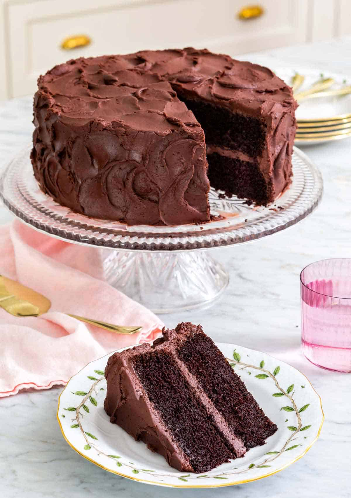

Devils Food Cake

Description
If you’re a fan of chocolate, then you will love this sinfully delicious Devil’s Food Cake.
It is a decadent cake that is rich, moist, and fudgy.
Bursting with intense chocolate flavor and covered in chocolate buttercream frosting, this cake is worthy of any occasion.!
Ingredients
- 2 cups all-purpose flour (240g)
- 2 teaspoons baking soda
- 1 teaspoon salt
- ½ teaspoon baking powder
- ½ cup unsalted butter room temperature (113g)
- 1 cup Dutch-processed cocoa powder sifted (100g)
- ½ cup vegetable oil (120ml)
- 1½ cups granulated sugar (300g)
- ½ cup packed light brown sugar (110g)
- 3 large eggs room temperature
- 1 tablespoon vanilla extract
- ½ cup sour cream room temperature (120g)
- 1 cup milk room temperature (120ml)
- 1 cup hot coffee (240ml)
- chocolate buttercream frosting
Steps
- Preheat the oven to 350F. Butter and flour 2 (9-inch) round cake pans, or lightly spray with baking spray, and line the bottoms with parchment paper.
- In a large bowl, sift together the flour, baking soda, salt, and baking powder.
- In a large mixing bowl or the bowl of a stand mixer with the paddle attachment, add the butter. Beat on medium speed until creamy. In a medium bowl, whisk together the cocoa powder and oil. Add to the butter along with the sugars. Beat on medium speed until very light and fluffy, about 5 minutes, stopping to scrape down the bowl a few times during mixing.
- With the mixer running, add the eggs, one at a time, beating well after each addition. Stop to scrape down the bowl as needed throughout mixing. Beat in vanilla.
- With the mixer on low speed, add a third of the flour mixture followed by half of the milk and half of the sour cream. Continue alternating between the flour, milk, and sour cream until combined. Scrape down the bowl. Add the hot coffee and carefully whisk together until well combined. Pour the batter into the prepared cake pans.
- Bake for 40 to 45 minutes or until the cakes are starting to pull away from the sides of the pans and the center springs back when gently pressed. Let the cakes cool completely in the pans. Carefully invert the cakes and remove the parchment paper. (The cakes are very tender and delicate so be gentle.)
- If desired, cut each cake layer in half horizontally, creating 4 thin rounds. Place a cake layer on a cake stand, spread about 3/4 cup of frosting over the top. Repeat with the remaining cake layers. Spread the remaining frosting all over the outside of the cake. The assembled cake can be covered and stored at room temperature for up to 5 days.